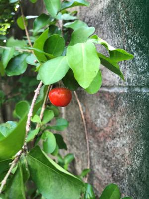

うるがいの話 ある日
最新: 初盆
うるがいとは 前提知識です
カニの画像をクリックすると『うるがいの話』サイトを表示します
うるがい(ｳﾙｶﾞｲ urugai)とは、『もずくがに』の名前でとても大きくなります。
たながー（ﾀﾅｶﾞｰtanagaa）とは手長えびのことで、何種類かあり大きいのは車 エビぐらいになります。
ぶながー(bunagaa)とは、赤い髪の毛、赤い身体、そして身長は１ｍ２０ｃｍ ぐらい、川の蟹を食べているの目撃された。場所は沖縄県国頭郡大宜味村のと ある村僕の隣近所に住んでいる爺さんから、聞いた話です。
2021年08月21日 (土）
初盆
18:11

「ナカビ」はお中元を持って、親族を回るらしいが、仏壇が実家の大宜味村に
あった頃は、那覇にいる私達はウンケーに実家に行くのでその時に親戚を回っ
た。現役の頃、那覇や浦添の親戚は旧盆の週の土日に回っていた、仏壇が那覇
にある今でも同じようにしていた、コロナ禍になってからそもそも親戚の家に
は出掛けていないが。初盆とは故人が亡くなった後、初めて迎えるお盆のこと。
今年の４月から４名が逝ってしまっている、本来なら仏壇にいって手を合した
いが・・、来年の一年忌に回りたい。
プログJINSEI STORIES滞仏日記「死ん
だ父さんが毎晩ぼくの夢に出てきて訴えたこと」
を読んで、先にあの世に逝っ
てしまった家族の夢って見たことがあるのだろうかと、フと思った。妹達をご
くたまに夢にみるが、両親や姉は全くない！。ま、どうでもいいか、毎朝拝ん
でいるし。島のホスピスで人生の最後の日々を生きる若い女性のドラマ「ライ
オンのおやつ」の最終回８回目をみる。最終回！、当然主人公の女性は亡くな
っていくのだよな、暗いのはあまり・・と思っていたが、先にあの世に行った
母親達と夢の中で楽しい時を過ごす。そして棺桶が運ばれるシーンがある叔母
さんと従兄弟の棺桶を運んだ感覚が戻っていた。